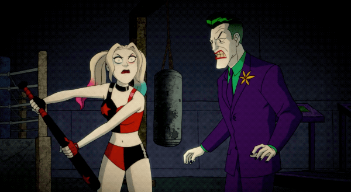

Arlequina
Empresas onde trabalhou
- Sindicato do Crime de Gotham: Antes de se tornar uma anti-heroína, a Arlequina trabalhou como psiquiatra no Asilo Arkham e se envolveu com o Sindicato do Crime de Gotham.
- Aves de Rapina: Em algumas encarnações das histórias, a Arlequina colaborou com o grupo de vigilantes conhecido como "Aves de Rapina", buscando redimir seu passado.
- Suicide Squad (Esquadrão Suicida): Arlequina também se tornou parte do Esquadrão Suicida...
Qualidades
- Determinação
- Agilidade e Habilidades Acrobáticas
- Carisma e Senso de Humor

Voltar para o início